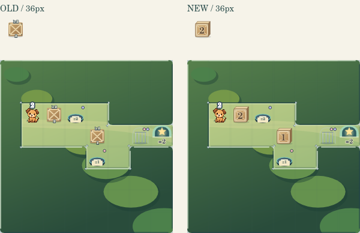
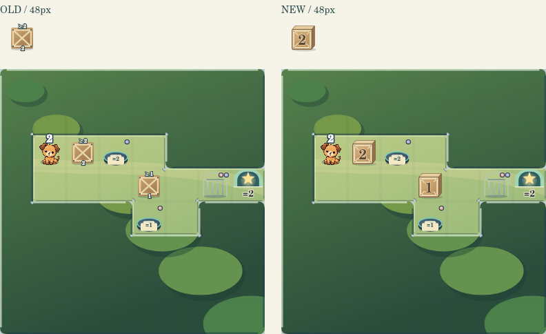

ILLUSTRATION STUDY / 未採用
箱は、数字ひとつで。
木の厚みと陰影を残し、中央の「2」を大きく。まずは絵だけを比べます。
将来案：「2」は重さ2で、段階2以上なら押せる。このルールは未実装です。現行の重量と押す条件は別のまま。このページは操作しないイラスト展示です。
1マス36px・実寸
1マス48px・実寸
ブラウザ表示倍率100%で36／48 CSS px。実機の見え方は本人確認待ちです。
箱の絵を拡大して見る
180pxの拡大図。実寸比較は上の36px・48pxです。
8×8の景色の中で
同じ配置の静止画です。箱以外の描画は変えていません。数字1の箱も同じ方針の見本です。
48pxの盤面が画面幅を超える場合は横にスクロールできます。
保存した旧案／新案画像
左が旧案、右が新案。画像はCanvas直接出力です。


次に吟味するイラストの方向
スイッチは押し込みと戻り、気流は流れる形、掘れる土は柔らかさと欠け方で伝える案を検討します。説明文字を盤面に追加する前に、輪郭と動きで区別できるかを比べます。
今回は箱だけを制作。既に良い星付き出口・アーチ・ワープ・木製看板は維持します。箱の新案も、本人の比較後に採用を判断します。
素材を読み込み中…